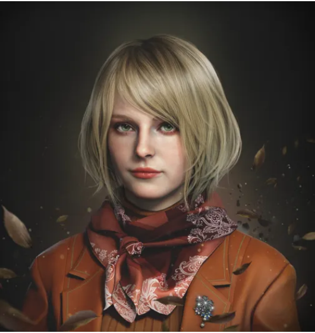
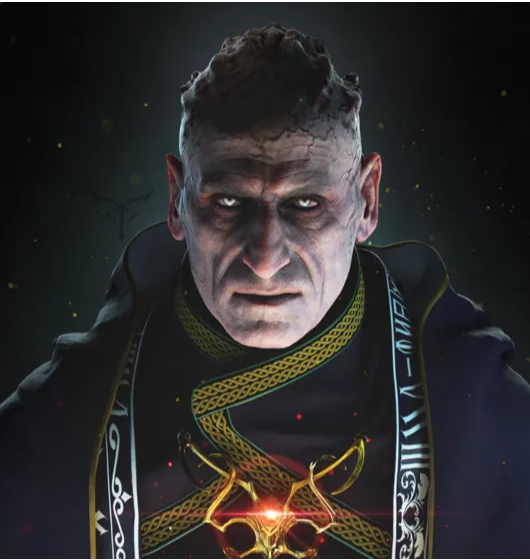
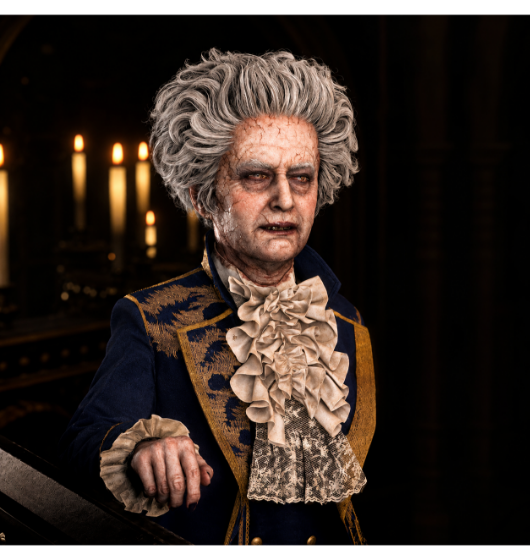
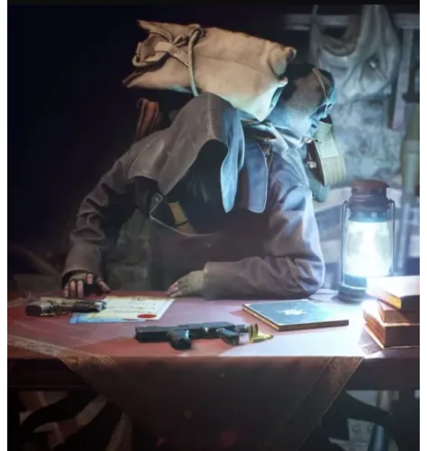
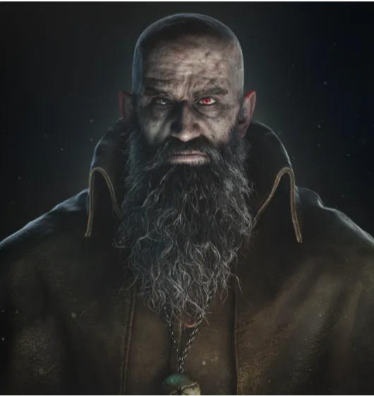
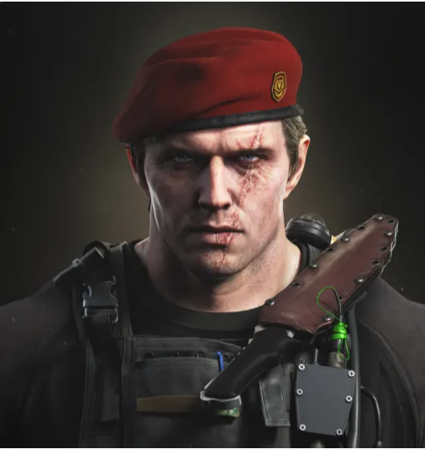
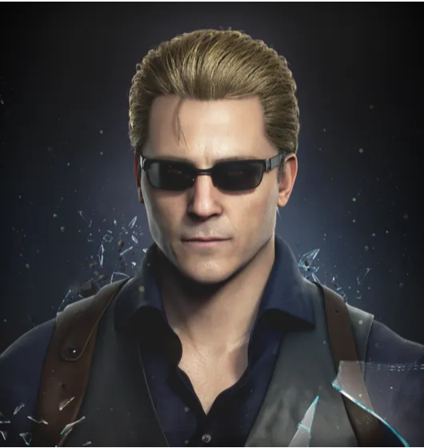

-
Leon Scott Kennedy
ProtagonistaDescrição
Leon S. Kennedy é um agente do governo dos Estados Unidos, conhecido por sua coragem e habilidades excepcionais. No remake de Resident Evil 4, ele é enviado para resgatar Ashley Graham, a filha do presidente, sequestrada por um culto na Europa.
-
Ashley Graham
Coadjuvante
Descrição
Ashley Graham é a filha do presidente dos Estados Unidos e desempenha um papel central na trama de Resident Evil 4. No remake, ela é sequestrada por um culto misterioso na Europa, levando Leon S. Kennedy a ser enviado em uma missão de resgate.
-
Ada Wong
Anti-heroínaDescrição
Ada Wong é uma espiã misteriosa e habilidosa, que desempenha um papel complexo na trama de Resident Evil 4. Ela opera independentemente, mas seus objetivos frequentemente se cruzam com os de Leon S. Kennedy.
-
Luis Serra
Aliado
Descrição
Luis Serra é um personagem carismático e complexo em Resident Evil 4. Ele é um ex-pesquisador que desempenha um papel crucial na trama do jogo, oferecendo ajuda e informações valiosas a Leon S. Kennedy.
-
Osmund Saddler
Antagonista
Descrição
Osmund Saddler é o principal antagonista de Resident Evil 4 e o líder do culto Los Illuminados. Ele é a mente por trás do sequestro de Ashley Graham e dos eventos que Leon S. Kennedy deve enfrentar.
-
Ramon Salazar
Antagonista
Descrição
Ramon Salazar é um dos principais antagonistas de Resident Evil 4, servindo como o castelão do castelo onde grande parte do jogo se desenrola. Ele é um membro devoto do culto Los Illuminados e um subordinado de Osmund Saddler.
-
Mercador
Misterioso
Descrição
Figura misteriosa presente durante toda a aventura. O Mercador oferece itens, armas e melhoras para Leon em troca de tesouros e pesetas, a moeda local.
-
Bitores Mendes
Antagonista
Descrição
O chefe da vila que Leon investiga. Assim como os outros habitantes locais, ele venera o líder de um culto misterioso. Extremamente alto e forte, exerce certa autoridade entre os aldeões daquela região.
-
Ingrid Hunnigan
SuporteDescrição
Uma coordenadora de missões que dá suporte aos agentes do governo dos Estados Unidos. Ela será o único contato externo de Leon, repassando informações via rádio.
-
Jack Krauser
Antagonista
Descrição
Um ex-membro e capitão das forças militares dos Estados Unidos. Ele e Leon desenvolveram um vínculo após este se tornar um agente, e os dois tomaram rumos diferentes após seu sumiço no fim da missão conhecida por Operação: Javier.
-
Albert Wesker
Antagonista
Descrição
Sobrevivente do incidente da Mansão Spencer e Ilha Rockfort. Escondido nas sombras, Albert Wesker está em busca das Plagas existentes na pequena vila. Wesker utiliza vários agentes para obter êxito em sua missão, entre eles os agentes Wong e Krauser.